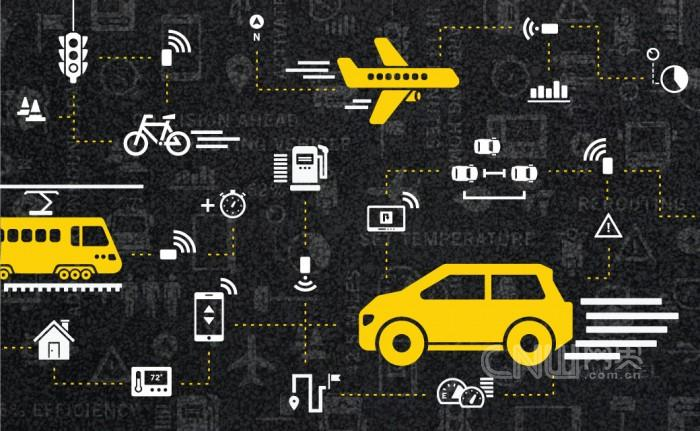
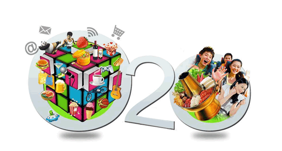

敢问路在何方？“互联网 ”时代下传统行业不得不思考的最大问题。互联网行业的发展是不可逆的，其必然对传统行业产生冲击，直面互联网，拥抱互联网是传统行业的最基本要求，但是如何拥抱互联网呢？
1.“互联网 工业”：让生产制造更智能
最近，德国“工业4.0”与中国元素碰撞，成为今年德国汉诺威IT展览（CeBIT2015）最大的看点，“工业4.0”是应用物联网、智能化等新技术提高制造业水平，将制造业向智能化转型，通过决定生产制造过程等的网络技术，实现实时管理，它“自下而上”的生产模式革命，不但节约创新技术、成本与时间，还拥有培育新市场的潜力与机会。
“互联网 制造业”和正在演变的“工业4.0”，将颠覆传统制造方式，重建行业规则，例如小米、乐视等互联网公司就在工业和互联网融合的变革中，不断抢占传统制造企业的市场，通过价值链重构、轻资产、扁平化、快速响应市场来创造新的消费模式，而在“互联网 ”的驱动下，产品个性化、定制批量化、流程虚拟化、工厂智能化、物流智慧化等等都将成为新的热点和趋势。
2.“互联网 农业”：催化中国农业品牌化道路
农业看起来离互联网最远，但农业作为最传统的产业也决定了‘互联网 农业’的潜力是巨大的。
首先，数字技术可以提升农业生产效率。例如，利用信息技术对地块的土壤、肥力、气候等进行大数据分析，并提供种植、施肥相关的解决方案，能够提升农业生产效率。其次，农业信息的互联网化将有助于需求市场的对接，互联网时代的新农民不仅可以利用互联网获取先进的技术信息，也可以通过大数据掌握最新的农产品价格走势，从而决定农业生产重点以把握趋势；再次，农业互联网化，可以吸引越来越多的年轻人积极投身农业品牌打造中，具有互联网思维的“新农人”群体日趋壮大，将可以创造出更为多样模式的“新农业”。
同时，农业电商将成为农业现代化的重要推手，将有效减少中间环节，使得农民获得更多利益，面对万亿元以上的农资市场以及近七亿的农村用户人口，农业电商的市场空间广阔，大爆发时代已经到来。而在此基础上，农民更需要建立农产品的品牌意识，将“品类”细分为具有更高识别度的“品牌”。例如，曾经的烟草大王褚时健栽种“褚橙”；联想集团董事柳传志培育“柳桃”；网易CEO丁磊饲养“丁家猪”等等，也有专注于农产品领域的新兴电商品牌获得巨大成功，例如三只小松鼠、新农哥等等，都是在农产品大品类中细化出个人品牌，从而提升其价值。
3.“互联网 教育”：在线教育大爆发
在今年总理报告中表示，2015年将会继续促进教育公平发展和质量提升，其中包括加快义务教育学校标准化建设，改善薄弱学校和寄宿制学校基本办学条件，落实农民工随迁子女在流入地接受义务教育等政策，据称仅2015年教育部就将为教育信息化投入700亿元。
在过去的2014年，K12在线教育、在线外语培训、在线职业教育等细分领域成为中国在线教育市场规模增长的主要动力，很多传统教育机构，例如新东方也正在从线下向线上教育转型，而一些在移动互联网平台上掌握了高黏性人群的互联网公司，也在转型在线教育，例如网易旗下的有道词典，就在英语垂直应用领域掌握了4亿的高价值用户，这部分用户对于在线学习英语的需求非常强烈，因此，有道词典推出了类似在线学英语、口语大师等产品和服务，将用户需求深度挖掘，而通过大数据技术，可以实现个性化推荐，而基于移动终端的特性，用户可以用碎片化时间进行沉浸式学习，让在线教育切中了传统教育的一些痛点和盲区。
4.“互联网 医疗”：移动医疗垂直化发展
“互联网 医疗”的融合，最简单的做法是实现信息透明和资源分配不均等问题，例如，类似挂号网等服务，可以解决大家看病时挂号排队时间长，看病等待时间长、结算排队时间长的“三长一短”问题。而春雨医生、丁香园等轻问诊型应用的使用，则解决了部分用户的就诊难问题。
而互联网医疗的未来，将会向更加专业的移动医疗垂直化产品发展，可穿戴监测设备就将会是其中最可能突破的领域。例如，iHealth推出了Align性能强大的血糖仪能够直接插入智能手机的耳机插孔，然后通过移动应用在手机屏幕上显示结果，紧凑的外形和移动能力使其成为糖尿病患者最便利的工具；健康智能硬件厂商Withings发布了Activite Pop智能手表，计步器、睡眠追踪、震动提醒等功能，其电池续航时间长达8个月；南京熙健信息将心电图与移动互联网结合，建立随时可以监测心脏疾病风险的移动心电图……大数据和移动互联网、健康数据管理未来有较大的机遇甚至可能改变健康产品的营销模式。同时，随着互联网个人健康的实时管理的兴起，在未来传统的医疗模式也或将迎来新的变革，以医院为中心的就诊模式或将演变为以医患实时问诊、互动为代表的新医疗社群模式。
5.“互联网 金融”：全民理财与微小企业发展
从余额宝、微信红包再到网络银行……互联网金融已悄然来到每个人身边。数据显示，2014年上半年，国内P2P网络借贷平台半年成交金额近千亿元，互联网支付用户2.92亿。传统金融向互联网转型，金融服务普惠民生，成为大势所趋。“互联网 金融”的结合将掀起全民理财热潮，低门槛与便捷性让资金快速流动，大数据让征信更加容易，P2P和小额贷款发展也越加火热。这也将有助于中小微企业、工薪阶层、自由职业者、进城务工人员等普罗大众获得金融服务。
小微企业是中国经济中最有活力的实体，小微企业约占全国企业数量的90%，创造约80%的就业岗位、约60%的GDP和约50%的税收，但央行数据显示，截至2014年底，小微企业贷款余额占企业贷款余额的比例为30.4%，维持在较低水平。“互联网 ”金融将让小微企业贷款门槛降低，激活小微企业活力。
互联网金融包括第三方支付、P2P小额信贷、众筹融资、新型电子货币以及其他网络金融服务平台都将迎来全新发展机遇，社会征信系统也会由此建立。
6.“互联网 交通和旅游业”：一切资源共享起来
我们的物理空间越来越有限，住房越来越小，车位越来越少。很多产品，你并不一定需要再100%的拥有，你只需要考虑如何更好地使用，如果能便捷的使用，“拥有权”其实不再重要。“互联网 交通”不仅可以缓解道路交通拥堵，还可以为人们出行提供便利，为交通领域的从业者创造财富。
例如，实时公交应用，可以方便出行用户对于公交汽车的到站情况进行实时查询，减少延误和久等；嘀嘀和快的不仅为用户出行带来便捷，对于出租车而言也减少了空车率；而易到用车、嘀嘀专车和PP租车则发挥了汽车资源的共享，掀起了新时代互联网交通出行领域的新浪潮。

而在旅游服务行业，旅游服务在线化、去中介化会越来越明显，自助游会成为主流，基于旅游的互联网体验社会化分享还有很大空间，而类似Airbnb和途家等共享模式可以让住房资源共享起来，旅游服务、旅游产品的互联网化也将有较大的想象空间。
7.“互联网 文化”：让创意更具延展性和想象力
文化创意产业的核心是创意。是以创意为核心，向大众提供文化、艺术、精神、心理、娱乐等产品的新兴产业。互联网与文化产业高度融合，推动了产业自身的整体转型和升级换代。互联网对创客文化、创意经济的推动非常明显，它再次激发起全民创新、创业，以及文化产业、创意经济的无限可能。
互联网带来的多终端、多屏幕，将产生大量内容服务的市场，而在内容版权的衍生产品，互联网可以将内容与衍生品与电商平台一体化对接，无论是视频电商、TV电商等等都将迎来新机遇；一些区域型的特色文化产品，将可以使用互联网，通过创意方式走向全国，未来设计师品牌、族群文化品牌、小品类时尚品牌都将迎来机会；而明星粉丝经济和基于兴趣为细分的社群经济，也将拥有巨大的想象空间。
8．“互联网 家电/家居”：让家电会说话，家居更聪明
目前大部分家电产品还处于互联阶段，即仅仅是介入了互联网，或者是与手机实现了链接。但是，真正有价值的是互联网家电产品的互通，即不同家电产品之间的互联互通，实现基于特定场景的联动，手机不仅仅是智能家居的唯一的入口，是让更多的智能终端作为智能家居的入口和控制中心，实现互联网智能家电产品的硬件与服务融合解决方案，“家电 家居”产品衍生的“智能化家居”，将是新的生态系统的竞争。
例如，刚刚在上海结束的2015年中国家电博览会上，无论是海尔、美的、创维等传统家电大佬，还是京东、360、乐视等互联网新贵，或推出智能系统和产品或主推和参与搭建智能平台，一场智能家居的圈地大战进行得如火如荼。例如，海尔针对智能家居体系建立了七大生态圈，包括洗护、用水、空气、美食、健康、安全、娱乐居家生活，利用海尔U 智慧生活App将旗下产品贯穿起来；美的则发布了智慧家居系统白皮书,并明确美的构建的M-Smart系统将建立智能路由和家庭控制中心，提供除WiFi之外其他新的连接方案，并扩展到黑电、娱乐、机器人、医疗健康等品类；在智能电视领域，乐视在展示乐视TV超级电视的同时，还主推“LePar超级合伙人”计划，希望通过创新的“O2O C2B 众筹”多维一体合作模式，邀请LePar项目的超级合伙人，共掘大屏互联网市场。
9.“互联网 生活服务”：O2O才刚刚开始
“互联网 服务业”将会带动生活服务O2O的大市场，互联网化的融合就是去中介化，让供给直接对接消费者需求，并用移动互联网进行实时链接。例如，家装公司，理发店，美甲店，洗车店，家政公司，洗衣店等等，都是直接面对消费者，如河狸家、爱洗车、点到等线上预订线下服务的企业，不仅节省了固定员工成本，还节省了传统服务业最为头疼的店面成本，真正的将服务产业带入了高效输出与转化的O2O服务市场，再加上在线评价机制，评分机制，会让参与的这些手艺人，精益求精，自我完善。

当下O2O成为投资热点，事实上，这个市场才刚刚开始，大量的规模用户，对于传统垂直领域的改造，形成固定的黏性，打造平台都还有很大的探索空间。
10.“互联网 媒体”：新业态的出现
互联网对于媒体的影响，不只改变了传播渠道，在传播界面与形式上也有了极大的改变。传统媒体是自上而下的单向信息输出源，用户多数是被动的接受信息，而融入互联网后的媒体形态则是以双向、多渠道、跨屏等形式，进行内容的传播与扩散，此时的用户参与到内容传播当中，并且成为内容传播介质。
交互化、实时化、社交化、社群化、人格化、亲民化、个性化、精选化、融合化将是未来媒体的几个重要的方向。以交互化、实时化和社交化为例子，央视春晚微信抢红包就是这三个特征的重要表现，让媒体可以与手机互动起来，还塑造了品牌与消费者对话的新的界面。社群化和人格化，一批有观点有性格的自媒体将迎来发展机遇，用人格形成品牌，用内容构建社群将是这类媒体的方向；个性化和精选化的表现则是一些用大数据筛选和聚合信息精准到人的媒体的崛起，例如今日头条等新的新闻资讯客户端就是代表。
11.“互联网 广告”：互联网语境 创意 技术 实效的协同
所有的传统广告公司都在思考互联网时代的生存问题，显然，赖以生存的单一广告的模式已经终结，它的内生动力和发展动力已经终结。未来广告公司需要思考互联网时代的传播逻辑，并且要用互联网创意思维和互联网技术来实现。
互联网语境的创意模式，过去考验广告公司的能力靠的是出大创意拍大广告片做大平面广告的能力，现在考验广告公司的则是实时创意，互联网语境的创意能力，整合能力和技术的创新和应用能力。例如，现在很多品牌都需要朋友圈的转发热图，要HTML5，要微电影，要信息图，要与当下热点结合的传播创意，这些都在考验创意能力，新创意公司和内容为主导的广告公司还有很大的潜力。而依托于程序化购买等新精准技术，以及以优化互联网广告投放的技术公司也将成为新的市场。总的来说，互联网语境 创意 技术 实效的协同才是互联网 下的广告公司的出路。
12.“互联网 零售”：零售体验、跨境电商和移动电商的未来
李克强总理在两会答记者问时谈到，实体店与网店并不冲突，实体店不仅不会受到冲击，还会借助“互联网 ”从而重获新生，传统零售和线上电商正在融合，例如苏宁电器表示，传统的电器卖场今后要转型为可以和互联网互动的店铺，展示商品，让消费者亲身体验产品；2014年5月，顺丰旗下的网购社区服务店“嘿客”店引入线下体验线上购买的模式，打通逆向O2O；1号店在上海大型社区中远两湾城开通首个社区服务点，成为上海第一个由电商开通，为社区居民提供现场网购辅导、商品配送自提等综合服务的网购线下服务站。这些都在阐明零售业的创新方向，线上线下未来是融合和协同而不是冲突。
跨境电商也成为零售业的新机会，最近，国务院批准杭州设立跨境电子商务综合试验区，其中提出要在跨境电子商务交易、支付、物流、通关、退税、结汇等环节的技术标准、业务流程、监管模式和信息化建设等方面先行先试，随着跨境电商的贸易流程梳理得越来越通畅，跨境电商在未来的对外贸易中也将占据更加重要的地位，如何将中国商品借助跨境平台推出去，值得很多企业思考。
此外，如果说电子商务对实体店生存构成巨大挑战，那么移动电子商务则正在改变整个市场营销的生态。智能手机和平板电脑的普及，大量移动电商平台的创建，为消费者提供了更多便利的购物选择，例如微信将推出购物圈，就在构建新的移动电商的生态系统，移动电商将会成为很多新品牌借助社交网络走向市场的重要平台。
应该说，“互联网 ”是一个人人皆可获得商机的概念，但是，“互联网 ”不是要颠覆，而是要思考跨界和融合，更多是思考互联网时代产业如何与互联网结合创造新的商业价值，企业不能因此陷入“互联网 ”的焦虑和误区，“互联网 ”更重要是“ ”，而不是“-”也不是毁灭。
| Copyright © 2007-2016 移动互联网专业委员会
版权所有 未经许可网站内容禁止复制、转载，任何人不得擅自使用 |